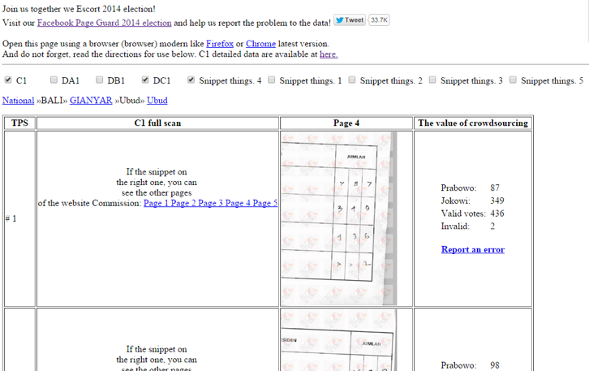

Indonesia’s Kawal Pemilu
Elections: Free, Fair and Open Data
by Auralice Graft, Stefaan Verhulst and Andrew Young*
During the summer of 2014, Ainun Najib, who would later go on to co-found Kawal Pemilu, was living and working in Singapore. It was the middle of Ramadan, and he was down with the flu. Still, he was following the elections closely in his native Indonesia, and watched with growing concern as the extreme polarization that had characterized the campaign spilled over into the post-election period, and as the results were contested by both the Jokowi and Probowo camps.
Amid allegations of fraud and vote rigging, Najib began looking at ways he could add more transparency to the electoral process. “We [had to do something] to prevent the nation [from] being ripped apart because of two claims to victory that nobody can verify,” he told The Financial Times.14 Around this time, he messaged a friend, Andrian Kurniady, a Google employee based in Sydney; Najib had met Kurniady in 2007 at a Mathematics Olympiad Champions competition, and though they were not close friends, they were connected on Facebook. The two quickly decided to work together to help safeguard Indonesia’s vote count. Later, they were joined by three other friends, who worked with them to get the application off the ground.
In its early days, Kawal Pemilu tried to fill machine readability gaps in KPU data by digitizing scanned C1 forms and using handwriting recognition to extract the polling data. They quickly ran into obstacles with this approach, however, and soon decided to turn to a form of crowdsourcing. Specifically, they decided to recruit volunteers to manually digitize the almost 500,000 scanned C1 forms on the KPU site. This was the genesis of Kawal Pemilu (“guard the election,” in Indonesian), which was launched on July 12, 2014, with the intent of providing a platform for public participation in guarding the 2014 general election results. As Andrian Kurniady, Najib’s co-founder, put it at the time: “We hope this system can reduce the uncertainty, fear of election fraud, and restore public confidence in one of the most important points in Indonesian democracy [while it] is still young.”15
The Kawal Pemilu application consists of two main components. At the back-end, it includes a private, walled-off website, where volunteers and site administrators can enter polling data based on scanned forms (Figure 1). In addition, there is a public-facing site that allows citizens to view the data, broken down by polling station and candidate (Figure 2). Visitors can choose to view results for different levels of the tabulation process. For example, a visitor can choose to examine just C1 results. Results can also be viewed by region.
The underlying data for the site was generated from KPU data through a network of volunteers spread across the globe. Volunteers were recruited through a closed, secret Facebook group, which ensured that only trusted people were included. To start the process of recruiting volunteers, each founder chose 10 trustworthy friends, each of whom was asked to recruit 10 more, and each of those was also asked to recruit another 10 friends – and so on. Over 700 volunteers were recruited in this way in just three days. Volunteer names and identities were initially kept hidden, to prevent any efforts at bribing or intimidation.
Each recruit received a secret link to the nonpublic component of the website, where scanned C1 forms were presented with an accompanying form for the volunteer to fill in with extracted data.16 The form also allowed for the reporting of errors. The results of this work were posted every 10 minutes to the public-facing website, which was read-only. In addition to allowing citizens to monitor election results in near real-time, this data also allowed them to compare vote tallies listed on the site to official numbers released by polling stations.

Figure 1: Screen used by volunteers to digitize scanned C1 forms (translated into English by Google)

Figure 2: Screenshot of the public-facing Kawal Pemilu website (translated into English by Google)
The entire process of building the site and gathering all the data was performed with remarkable efficiency. Because the co-founders were spread around the world (California, Sydney, Singapore, Indonesia, Netherlands, Germany), they were able to work round-the-clock, taking maximum advantage of different time zones. This enabled them to create the website and counting system in just two days. In addition, all the recruited volunteers and founders worked without pay. The total capital investment for the setup was, as a result, just $54; these funds were used to purchase the website’s domain and space on a hosting server.17 Overall, Kawal Pemilu is an impressive example of a “public-service startup”: Despite never benefiting from seed capital or a Silicon Valley-style business ecosystem, it was put together with all the agility and speed that are the hallmarks of far more lavishly funded business ventures.
Read MoreLearn about our methodology
Reference
4 GovLab interview with Diah Setiawaty, Program Manager for Election Application Programming Interface, Perludem, September 10, 2015.
5 Brajawidagda, Uuf and Akemi Takeoka Chatfield. “Roles of Social Media in Open Data Environments: A Case Study of the 2014 Indonesian Presidential Election Voting Results.” 25th Australasian Conference on Information Systems. December 8-10, 2014. http://aut.researchgateway.ac.nz/bitstream/handle/10292/8170/acis20140_submission_176.pdf?sequence=1&isAllowed=y
6 GovLab interview with Diah Setiawaty, Program Manager for Election Application Programming Interface, Perludem, September 10, 2015.
7 “2014, Indonesia’s commitment to Open Data.” Open Government Indonesia. March 2, 2014. http://opengovindonesia.org/uncategorized-en/2014-indonesia-commitment-open-data/
8 Lukman, Enricko. “Indonesian voters are crowdsourcing ballot counts to protect against election fraud.” Tech in Asia. July 14, 2014. https://www.techinasia.com/kawal-suara-indonesia-voters-crowdsourcing-ballot-counts-protect-election-fraud/
9 “Top 10 Countries with most Facebook users 2014.” Addictive Lists. April 22, 2014. http://addictivelists.com/top-10-countries-with-most-facebook-users-2014/
10 Lipman, Victor. “The World’s Most Active Twitter City? You Won’t Guess It. Forbes. December 30, 2012. http://www.forbes.com/sites/victorlipman/2012/12/30/the-worlds-most-active-twitter-city-you-wont-guess-it/
11 GovLab interview with Diah Setiawaty, Program Manager for Election Application Programming Interface, Perludem, September 10, 2015. And Lukman, Enricko. “Indonesian voters are crowdsourcing ballot counts to protect against election fraud.” Tech in Asia. July 14, 2014. https://www.techinasia.com/kawal-suara-indonesia-voters-crowdsourcing-ballot-counts-protect-election-fraud/
12 GovLab interview with Ainun Najib, Co-Founder Kawal Pemilu, August 5, 2015.
13 Rakhmani, Inaya. “Technology for Transparency.” New Mandala. July 21, 2014. http://asiapacific.anu.edu.au/newmandala/2014/07/21/technology-for-transparency/
14 Bland, Ben. “Indonesian techies crowdsource election results.” Financial Times. July 18, 2014. http://www.ft.com/intl/cms/s/0/6c62a8b6-0e33-11e4-85ab-00144feabdc0.html#axzz3x2yImI1u.
15 Yusuf, Oik. “Siapakah “Pandawa” di Balik Kawal Pemilu?” Kompas.com. August 13, 2014. http://tekno.kompas.com/read/2014/08/13/09050057/Siapakah.Pandawa.di.Balik.Kawal.Pemilu.?utm_source=WP&utm_medium=box&utm_campaign=Khlwp. Translated into English by Google.
16 GovLab interview with Ainun Najib, Co-Founder Kawal Pemilu, August 5, 2015.
17 “The Five Pandawa Behind Kawal Pemilu.” Global Indonesian Voices. August 13, 2014. http://www.globalindonesianvoices.com/14988/the-five-pandawa-behind-kawal-pemilu/
18 Lukman, Enricko. “Indonesian voters are crowdsourcing ballot counts to protect against election fraud.” Tech in Asia. July 14, 2014. https://www.techinasia.com/kawal-suara-indonesia-voters-crowdsourcing-ballot-counts-protect-election-fraud/
19 Lukman, Enricko. “5 things you need to know about Indonesia’s election tech fighters.” Tech in Asia. July 18, 2014. https://www.techinasia.com/kawal-pemilu-indonesia-presidential-election-fighters/
21 Lukman, Enricko. “5 things you need to know about Indonesia’s election tech fighters.” Tech in Asia. July 18, 2014. https://www.techinasia.com/kawal-pemilu-indonesia-presidential-election-fighters/
22 After 460,000 forms, recruitment was stopped because Kawal Pemilu founders believed they had achieved their goals. In addition, the site had received considerable media coverage by this time, and the founders decided to stop recruiting because they feared that recruits might not be trustworthy anymore. GovLab interview with Diah Setiawaty, Program Manager for Election Application Programming Interface, Perludem, September 10, 2015.
23 GovLab interview with Uuf Brajawidagda, Lecturer of Indonesian Politics, University of Wollongong, Australia, September 3, 2015.
24 GovLab interview with Uuf Brajawidagda, Lecturer of Indonesian Politics, University of Wollongong, Australia, September 3, 2015.
25 GovLab interview with Uuf Brajawidagda, Lecturer of Indonesian Politics, University of Wollongong, Australia, September 3, 2015.
26 GovLab interview with Diah Setiawaty, Program Manager for Election Application Programming Interface, Perludem, September 10, 2015.
27 Lukman, Enricko. “As Indonesia’s democracy is on the verge of crisis, hackers and fakers attack crowdsourced vote counts.” Tech in Asia. July 18, 2014. https://www.techinasia.com/indonesia-democracy-crisis-hackers-fakers-attack/
28 Rakhmani, Inaya. “Technology for Transparency.” New Mandala. July 21, 2014. http://asiapacific.anu.edu.au/newmandala/2014/07/21/technology-for-transparency/
29 GovLab interview with Ainun Najib, Co-Founder Kawal Pemilu, August 5, 2015.
30 Rakhmani, Inaya. “Technology for Transparency.” New Mandala. July 21, 2014. http://asiapacific.anu.edu.au/newmandala/2014/07/21/technology-for-transparency/
31 “Lihat sendiri perbedaan APDB versi Pemprov dan DPRD di KawalAPBD.org.” Rappler. March 10, 2015. http://www.rappler.com/world/regions/asia-pacific/indonesia/86371-lihat-perbedaan-apbd-versi-pemprov-dan-dprd&prev=search. Translated by Google.
33 Rakhmani, Inaya. “Technology for Transparency.” New Mandala. July 21, 2014. http://asiapacific.anu.edu.au/newmandala/2014/07/21/technology-for-transparency/
34 Naing, Saw Yan. “Smartphone-Wielding Indonesians Tasked With Ensuring Fair Elections.” The Irrawaddy. April 7, 2014. http://www.irrawaddy.org/asia/smartphone-wielding-indonesians-tasked-ensuring-fair-elections.html
35 Ruslan, Heri. “Kawal Pilkada Publikasikan Real Count Pilkada Serentak.” Republika.co.id. December 20, 2015. http://nasional.republika.co.id/berita/nasional/pilkada/15/12/20/nzn40m372-kawal-pilkada-publikasikan-real-count-pilkada-serentak. Translated by Google.
36 GovLab interview with Diah Setiawaty, Program Manager for Election Application Programming Interface, Perludem, September 10, 2015.
Special thanks to Akash Kapur who provided crucial editorial support for this case study, and to the peer reviewers who provided input on a pre-published draft.